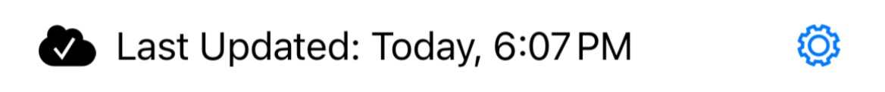

MixologyTech Sync
Using a single sync account, you can unify your ingredient inventory, journal and lists across any or all MixologyTech apps for iPhone and iPad you purchase, across as many devices as you own.
Sync provides a few benefits:
- A form of distributed backup: if you have to reinstall an app for any reason, you can recover your inventory, journal and lists simply by reconnecting to your account on the server
- More efficient ingredient inventory management: you only have to make a change once and all your other apps will be automatically updated
- Shared lists and journal: the journal and lists features can work standalone within an app, but they’re generally more useful when they can span multiple apps
- Web access to your data: you can access your sync data at any time by logging into https://my.mixologytech.com
Even if you only use one app on one device, the sync service is still valuable as a backup mechanism.
How to set up sync
How it works: the short version
Writing about this service makes it sound more complicated to use than it actually is. Here’s the quick start:
- Fire up an app.
- Tap the settings button at the bottom of the main menu.
- Choose “Sync”.
- If you don’t have an account yet, create one.
- If you have an account, log into it.
- Done! You’re syncing!
- Repeat as necessary for your other apps and devices.
How it works: the long version
We are not using iCloud for the sync infrastructure for many good reasons that I’m not going to belabor here. Instead, we’ve implemented our own sync server. To start using sync, you’ll create a free sync account within any one of the apps, then use the same account credentials to link the other apps. It’s pretty straightforward, and should “just work” thereafter.
In short, the sync server is a simple mechanism that unifies and caches a snapshot of your total inventory, list and journal data from one or more apps. Each app then retrieves that data on an as-needed basis to keep itself up-to-date, and sends changes to the server when appropriate.
To create your free sync account, you’ll be providing a (functional) email address and password. You’ll use this email address and password as your login credentials for all the apps you use on all your devices.
We will take reasonable steps to protect your email address and will not expose, sell or transfer it to third parties. You generally won’t be receiving emails from us, either, except if you request a password reset or to inform you about something relevant to your account. (Perhaps a rare announcement email if something we think is really important comes up.) That said, this is a casual sync service for drink recipe apps and you should use it only for casual purposes, ultimately at your own risk. (Common sense, people!)
Please note our privacy policy.
You can create your sync account by tapping the gear icon at the bottom of the main screen and choosing “Sync”. Choose the “Need an account? Create one.” option and follow the prompt. We provide 1Password integration if you use that tool.
If you have other apps and/or devices, simply proceed to each in turn and use the “Login” form to connect each to the same account you just created. When the app asks if you wish to merge or replace the local inventory, you will normally want to merge. If you choose “replace”, then any inventory, journal and list data in the app you’re using will be erased and replaced with whatever is on the server.
That’s about it! Going forward, you shouldn’t have to do anything but use the apps normally. They will automatically check the server for changes to sync. Obviously, sync only works when your devices have internet access and can reach the server. A display at the bottom of the main screen is provided to let you know what’s up:

Final note: sync is not instantaneous—there’s a latency of several seconds, so if you madly switch back and forth between apps flipping switches, it is indeed possible to out-run the sync system. As long as your changes are propagating reasonably quickly and correctly, there’s no cause for concern.
Questions? Please email info@mixologytech.com.